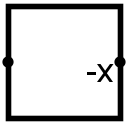

| Library: | Arithmetic |
| Introduced: | 2.0 Beta 22 |
| Appearance: |  |
Computes the two's-complement negation of the input. This negation is performed by maintaining all the lower-order bits up to the lowest-order 1, and complementing all bits above that.
If the value to be negated happens to be the least negative value, then its negation (which cannot be represented in two's-complement form), is still the least negative value.
When the component is selected or being added,
Alt-0 through Alt-9 alter its Data Bits
attribute.
None.
None.